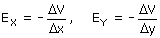

¡No caigas en la tentación
de decir que E = V/r!
Para empezar esta es la relación entre módulo del
campo y potencial cuando el campo lo crea una carga puntual. Nos piden
la relación entre el vector campo y el potencial
en cualquier campo.

Las componentes del campo son las respectivas derivadas del potencial (Cambiadas de signo) respecto a cada una de las variables. Esto es difícil de demostrar pero fácil de comprobar
En el caso de un campo uniforme no es necesario tomar cambios muy pequeños (Diferenciales), la relación es valida a cualquier escala

La componente x | y de un campo uniforme es la relación entre la d.d.p entre dos puntos y su separación horizontal | vertical. El signo negativo indica que el campo apunta hacia los potenciales decrecientes
Dimensionalmente resulta que N/C tendrá que ser igual a V/m..¡Tu mismo!